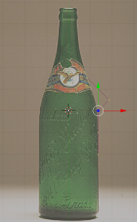
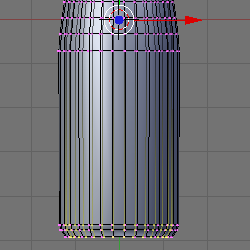
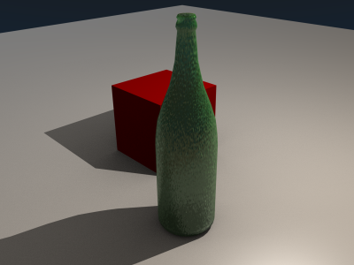

找到一个图片来临摹

View>Backgroud Image
点击Use Backgroud Image
点击Load
找到要临摹的图片，然后加载
调整Size，直到整个瓶子都是可见的（例如Size:3.50）
这个教程展示了如何根据一个图片来创建一个3D网格
找到一个图片来临摹
View>Backgroud Image
点击Use Backgroud Image
点击Load
找到要临摹的图片，然后加载
调整Size，直到整个瓶子都是可见的（例如Size:3.50）
移动鼠标直到顶点和瓶子的边缘对齐。
按下CTRL和SHIFT单独或一起来更多的控制顶点的位置

按下w，然后是Enter通过细分来创建更多顶点
再做一次
按下a来取消选定所有的顶点
按下RMB来选择一个单独的顶点
按下g来移动这个顶点到位置
继续，知道顶点和瓶子的边缘对齐
对于复杂的部分（例如瓶嘴和瓶勃）要比简单的部分使用更多的顶点

删除没有给瓶子的形状添加细节的顶点
改变Steps：为30

点击Spin
按下NUM7来看这个瓶子
点击Set Smooth
按下F12来渲染，之后按ESC退出

这个瓶子没有厚度。这个瓶子也没有底。这个瓶子还没有完全完成。
按下SHIFT-G，然后1来选择类似长度的边

按下SHIFT-F通过连接选择的所有边来创建一个面（瓶子的底部）
点击，然后按住RMB，之后拖拽它越过所有的顶点除了沿着底部的顶点

14.按下g，然后y，之后.1，最后Enter来移动瓶子的内部有一个凹口。
点击Shaders选项；值如下：
Ref: 1.000
Spec: 2.000
Hard: 511
Tralu: 1.00
Amb: 0.500
按下Mirror Transp选项；值如下：
Click Ray Mirror.
RayMir: 0.20
Depth: 5
Fresnel: 1.00
Fac: 1.25
Click Ray Transp.
IOR: 1.37
Depth: 5
添加一个平面，改变它的纹理。旋转，缩放，然后给瓶子一个纹理。为了有趣添加一个红色的立方体。开启Ambient Occlusion（F5，然后World buttons图标）。渲染。
